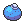
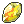
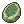

Pokégear rematches
152 Trainers call you after the first battle and challenge you again – with stronger teams whose levels grow with your progress.
How it works
You get the Pokégear from your mother right at the start.
- Defeat a Trainer who offers rematches. The number is saved in the Pokégear automatically.
- Collect 3 Badges in the Trainer's region. Before that there is no challenge – the Badges of another region do not count for this Trainer.
- After that the Trainer gets in touch. Whoever wants a rematch is marked in the Pokégear's list and waits at the old spot.
- Talk to the Trainer to battle. After the battle the wait starts again.
When a Trainer gets in touch
A saved Trainer can announce a rematch in three ways:
- When you enter an area: if you have walked at least 255 steps since the last time, every saved Trainer there challenges you with a 31% chance – at most one per visit, and only if nobody there is already waiting for you.
- Call on the spot: if you walk 255 steps in a row through the area of a saved Trainer, one of the Trainers from there calls you and wants to battle.
- Call from afar: outdoors and in caves the game checks every 30 steps whether somebody calls – at the earliest 10 minutes after the last call (180 in-game minutes when the game clock runs accelerated) and then with a 30% chance, or 60% with Lightning Rod at the head of your party. In 70% of the cases the caller is from the region you are in. A caller who is not in your area asks for a rematch with a 30% chance.
Gifts by phone
In one of 5 cases these Trainers from Johto have an item for you instead of a rematch when they call on the spot. Talk to them afterwards to pick it up.
| Trainer | Location | Possible items |
|---|---|---|
| Wade Bug Catcher | Route 31 |  Oran Berry |
| Alan School Kid | Route 36 |  Fire Stone Leaf Stone |
| Dana Lass | Route 38 | |
| Derek PokéFan | Route 39 | |
| Tully Fisherman | Route 42 | |
| Wilton Fisherman | Route 44 | |
| Kenji Black Belt | Route 45 | |
| Beverly Parasol Lady | National Park | |
| Jose Bird Keeper | Route 27 |
Which team you face
Every Trainer has up to four rematch teams. You always get the first one you have not beaten yet; once you have beaten all unlocked ones, the last one stays.
The later teams are unlocked by the Badges of the Trainer's region. With the region's title every team is open. The list below tells for each team from when it is possible.
The Pokémon evolve to fit their level – in Kanto as well. That is why the list names several stages for some Pokémon.
Levels by your progress
Rematches should challenge you without steamrolling you. For every stage of progress the game knows an expected level for your strongest Pokémon.
The strongest Pokémon of a rematch team is at least 6 and at most 1 levels below that expected level (column “Pokégear”). If its own level is already inside this range, it stays as it is. The other Pokémon keep their distance to the strongest one.
Your progress only counts forward: first the Kanto Badges, with the Kanto title the Johto Badges, with the Johto title the Hoenn Badges. Your own team does not matter.
The game keeps 30 stages for this. A title and “0 Badges” of the next region have the same expected level and share a row here. A Trainer only challenges you from 3 Badges of the Trainer's region on, and the rematches of the Kanto Gym Leaders (column “Leaders”) start with the Kanto title – before that the columns stay empty.
| Progress | Expected | Pokégear | Leaders |
|---|---|---|---|
| Kanto: 0 badges | 5 | — | — |
| Kanto: 1 badge | 13 | — | — |
| Kanto: 2 badges | 20 | — | — |
| Kanto: 3 badges | 22 | Lv. 16–21 | — |
| Kanto: 4 badges | 25 | Lv. 19–24 | — |
| Kanto: 5 badges | 30 | Lv. 24–29 | — |
| Kanto: 6 badges | 34 | Lv. 28–33 | — |
| Kanto: 7 badges | 35 | Lv. 29–34 | — |
| Kanto: 8 badges | 37 | Lv. 31–36 | — |
| Kanto title | 43 | Lv. 37–42 | Lv. 44–47 |
| Johto: 1 badge | 50 | Lv. 44–49 | Lv. 51–54 |
| Johto: 2 badges | 52 | Lv. 46–51 | Lv. 53–56 |
| Johto: 3 badges | 55 | Lv. 49–54 | Lv. 56–59 |
| Johto: 4 badges | 57 | Lv. 51–56 | Lv. 58–61 |
| Johto: 5 badges | 59 | Lv. 53–58 | Lv. 60–63 |
| Johto: 6 badges | 59 | Lv. 53–58 | Lv. 60–63 |
| Johto: 7 badges | 62 | Lv. 56–61 | Lv. 63–66 |
| Johto: 8 badges | 65 | Lv. 59–64 | Lv. 66–69 |
| Johto title | 70 | Lv. 64–69 | Lv. 71–74 |
| Hoenn: 1 badge | 72 | Lv. 66–71 | Lv. 73–76 |
| Hoenn: 2 badges | 74 | Lv. 68–73 | Lv. 75–78 |
| Hoenn: 3 badges | 79 | Lv. 73–78 | Lv. 80–83 |
| Hoenn: 4 badges | 82 | Lv. 76–81 | Lv. 83–86 |
| Hoenn: 5 badges | 83 | Lv. 77–82 | Lv. 84–87 |
| Hoenn: 6 badges | 87 | Lv. 81–86 | Lv. 88–91 |
| Hoenn: 7 badges | 91 | Lv. 85–90 | Lv. 92–95 |
| Hoenn: 8 badges | 93 | Lv. 87–92 | Lv. 94–97 |
| Hoenn title | 96 | Lv. 90–95 | Lv. 97–100 |
Rematches without the phone
Gym Leaders and Leagues follow their own rules:
- Kanto: after the Kanto title you can challenge every Gym Leader again in the Gym. The strongest Pokémon is 1 to 4 levels above the expected level (column “Leaders” of the table above). After the Johto title the teams change.
- Johto: after the Johto title the Gym Leaders and the League use new teams at fixed levels.
- Hoenn: after the Hoenn title a Gym Leader wants a rematch from time to time – after every 20th Trainer battle and every 60th battle against a wild Pokémon one of them gets in touch with a 31% chance. The teams have fixed levels.
All Trainers with rematches
152 Trainers in three regions. Each team shows from when it is possible and the range from the lowest to the highest level it can reach over all your further progress. Several names with a slash are evolution stages of the same Pokémon – which one appears depends on the level.
Kanto (60)
Colton · Bug Catcher · Route 3 · first battle Lv. 9
- Rematch 1 · from Kanto: 3 badges · Lv. 16–90
Butterfree, Beedrill, Butterfree - Rematch 2 · from Kanto: 3 badges · Lv. 17–90
Butterfree, Kakuna, Metapod - Rematch 3 · from Kanto: 6 badges · Lv. 33–90
Butterfree, Beedrill, Butterfree - Rematch 4 · from Kanto: 8 badges · Lv. 34–90
Butterfree, Beedrill, Butterfree
Timmy · Youngster · Route 24 · first battle Lv. 12
- Rematch 1 · from Kanto: 3 badges · Lv. 16–90
Sandshrew / Sandslash, Ekans / Arbok - Rematch 2 · from Kanto: 3 badges · Lv. 17–90
Raticate, Ekans, Zubat / Golbat / Crobat - Rematch 3 · from Kanto: 6 badges · Lv. 33–90
Raticate, Arbok, Golbat / Crobat - Rematch 4 · from Kanto: 7 badges · Lv. 34–90
Raticate, Arbok, Golbat / Crobat
Ali · Lass · Route 24 · first battle Lv. 10
- Rematch 1–4 · from Kanto: 3 badges · Lv. 16–90
Pidgey / Pidgeotto / Pidgeot, Oddish / Gloom / Vileplume, Bellsprout / Weepinbell / Victreebel
Isabelle · Picnicker · Route 6 · first battle Lv. 13
- Rematch 1 · from Kanto: 3 badges · Lv. 16–90
Pidgey / Pidgeotto / Pidgeot, Pidgey / Pidgeotto / Pidgeot, Pidgey - Rematch 2 · from Kanto: 3 badges · Lv. 17–90
Pidgeotto, Pidgeotto / Pidgeot, Pidgey / Pidgeotto / Pidgeot - Rematch 3 · from Kanto: 6 badges · Lv. 30–90
Pidgeotto / Pidgeot, Pidgeotto, Pidgeotto / Pidgeot - Rematch 4 · from Kanto: 7 badges · Lv. 31–90
Pidgeotto / Pidgeot, Pidgeotto / Pidgeot, Pidgeot
Megan · Lass · Route 8 · first battle Lv. 15
- Rematch 1 · from Kanto: 3 badges · Lv. 16–90
Pidgey / Pidgeotto / Pidgeot, Rattata, Nidoran♂, Meowth / Persian, Pikachu / Raichu - Rematch 2 · from Kanto: 4 badges · Lv. 22–90
Pidgeotto / Pidgeot, Raticate, Nidoking, Meowth / Persian, Pikachu / Raichu - Rematch 3–4 · from Kanto: 7 badges · Lv. 32–90
Pidgeot, Raticate, Nidoking, Persian, Raichu
Eli & Anne · Twins · Route 8 · first battle Lv. 17
- Rematch 1 · from Kanto: 3 badges · Lv. 17–90
Clefairy / Clefable, Jigglypuff / Wigglytuff - Rematch 2–4 · from Kanto: 6 badges · Lv. 33–90
Clefairy, Wigglytuff
Chris · Camper · Route 9 · first battle Lv. 17
- Rematch 1 · from Kanto: 3 badges · Lv. 17–90
Growlithe / Arcanine, Charmeleon / Charizard - Rematch 2 · from Kanto: 4 badges · Lv. 24–90
Growlithe / Arcanine, Charmander - Rematch 3 · from Kanto: 6 badges · Lv. 33–90
Arcanine, Charmeleon / Charizard - Rematch 4 · from Kanto: 8 badges · Lv. 36–90
Arcanine, Charizard
Alicia · Picnicker · Route 9 · first battle Lv. 14
- Rematch 1 · from Kanto: 3 badges · Lv. 16–90
Oddish / Gloom / Vileplume / Bellossom, Bellsprout / Weepinbell / Victreebel, Oddish / Gloom / Vileplume, Bellsprout / Weepinbell / Victreebel - Rematch 2 · from Kanto: 4 badges · Lv. 24–90
Meowth / Persian - Rematch 3 · from Kanto: 6 badges · Lv. 33–90
Persian - Rematch 4 · from Kanto: 8 badges · Lv. 36–90
Persian
Susie · Picnicker · Route 13 · first battle Lv. 19
- Rematch 1 · from Kanto: 3 badges · Lv. 19–90
Pidgeotto / Pidgeot, Meowth / Persian, Rattata / Raticate, Pikachu / Raichu, Meowth / Persian - Rematch 2 · from Kanto: 6 badges · Lv. 33–90
Pidgeotto / Pidgeot, Persian, Raticate, Raichu, Persian - Rematch 3 · from Kanto: 7 badges · Lv. 34–90
Pidgeotto / Pidgeot, Persian, Raticate, Raichu, Persian - Rematch 4 · from Kanto: 7 badges · Lv. 34–90
Pidgeot, Persian, Raticate, Raichu, Persian
Grace · Beauty · Route 15 · first battle Lv. 22
- Rematch 1 · from Kanto: 3 badges · Lv. 21–90
Pidgeotto / Pidgeot, Wigglytuff - Rematch 2–4 · from Kanto: 7 badges · Lv. 34–90
Pidgeot, Wigglytuff
Ron & Mya · Crush Kin · Route 15 · first battle Lv. 22
- Rematch 1 · from Kanto: 3 badges · Lv. 21–90
Hitmonchan, Hitmonlee - Rematch 2–3 · from Kanto: 7 badges · Lv. 34–90
Hitmonchan, Hitmonlee - Rematch 4 · from Kanto: 8 badges · Lv. 36–90
Hitmonchan, Hitmonlee
Johto (28)
Wade · Bug Catcher · Route 31 · first battle Lv. 45
- Rematch 1 · from Johto: 3 badges · Lv. 53–90
Beedrill, Spinarak, Pineco - Rematch 2 · from Johto: 3 badges · Lv. 54–90
Butterfree, Beedrill, Forretress - Rematch 3 · from Johto: 7 badges · Lv. 60–90
Butterfree, Beedrill, Forretress, Ariados - Rematch 4 · from Johto: 8 badges · Lv. 63–90
Butterfree, Beedrill, Ledian, Forretress, Ariados
Liz · Picnicker · Route 32 · first battle Lv. 47
- Rematch 1 · from Johto: 3 badges · Lv. 53–90
Victreebel, Victreebel, Nidoqueen - Rematch 2 · from Johto: 4 badges · Lv. 55–90
Victreebel, Nidorino, Nidoqueen - Rematch 3 · from Johto: 7 badges · Lv. 60–90
Victreebel, Nidoking, Nidoqueen - Rematch 4 · from Johto title · Lv. 68–90
Victreebel, Nidoking, Nidoqueen
Alan · School Kid · Route 36 · first battle Lv. 53
- Rematch 1 · from Johto: 3 badges · Lv. 53–90
Tangela / Tangrowth, Exeggutor, Arcanine - Rematch 2 · from Johto: 7 badges · Lv. 58–90
Natu, Tangrowth, Quagsire, Arcanine - Rematch 3 · from Johto: 7 badges · Lv. 57–90
Xatu, Tangela, Quagsire, Yanma / Yanmega - Rematch 4 · from Johto: 8 badges · Lv. 63–90
Xatu, Tangrowth, Quagsire, Arcanine
Irwin · Juggler · Route 35 · first battle Lv. 51
- Rematch 1 · from Johto: 3 badges · Lv. 53–90
Electrode, Pineco, Voltorb - Rematch 2 · from Johto: 7 badges · Lv. 61–90
Electrode, Forretress, Electrode - Rematch 3 · from Johto: 8 badges · Lv. 63–90
Electrode, Forretress, Electrode - Rematch 4 · from Johto title · Lv. 68–90
Electrode, Forretress, Electrode
Jack · School Kid · National Park · first battle Lv. 52
Beverly · Parasol Lady · National Park · first battle Lv. 53
Hoenn (64)
James · Bug Catcher · Petalburg Woods · first battle Lv. 69
- Rematch 1 · from Hoenn: 3 badges · Lv. 77–90
Wurmple, Masquerain, Ninjask - Rematch 2 · from Hoenn: 4 badges · Lv. 79–90
Dustox, Masquerain, Ninjask - Rematch 3 · from Hoenn: 5 badges · Lv. 82–90
Masquerain, Dustox, Ninjask - Rematch 4 · from Hoenn: 6 badges · Lv. 85–90
Masquerain, Ninjask, Dustox, Ninjask
Nob · Black Belt · Route 115 · first battle Lv. 77
- Rematch 1 · from Hoenn: 3 badges · Lv. 76–90
Hariyama, Medicham, Machamp, Machamp - Rematch 2 · from Hoenn: 4 badges · Lv. 79–90
Machamp, Makuhita, Medicham, Machamp - Rematch 3 · from Hoenn: 5 badges · Lv. 80–90
Machamp, Machamp, Hariyama, Machoke - Rematch 4 · from Hoenn: 6 badges · Lv. 85–90
Machop, Machamp, Machoke, Machamp
Timothy · Expert · Route 115 · first battle Lv. 81
- Rematch 1 · from Hoenn: 3 badges · Lv. 76–90
Medicham, Machamp, Whiscash, Hariyama - Rematch 2 · from Hoenn: 7 badges · Lv. 84–90
Medicham, Machoke, Whiscash, Hariyama - Rematch 3 · from Hoenn: 7 badges · Lv. 86–90
Machamp, Whiscash, Manectric, Hariyama - Rematch 4 · from Hoenn: 7 badges · Lv. 88–90
Medicham, Machamp, Whiscash, Hariyama
Cyndy · Battle Girl · Route 115 · first battle Lv. 76
- Rematch 1 · from Hoenn: 3 badges · Lv. 76–90
Medicham, Hariyama, Medicham, Hariyama - Rematch 2 · from Hoenn: 4 badges · Lv. 79–90
Medicham, Hariyama, Medicham, Hariyama - Rematch 3 · from Hoenn: 5 badges · Lv. 81–90
Medicham, Hariyama, Medicham, Hariyama - Rematch 4 · from Hoenn: 7 badges · Lv. 84–90
Medicham, Hariyama, Medicham, Hariyama
Elliot · Fisherman · Route 106 · first battle Lv. 71
- Rematch 1 · from Hoenn: 3 badges · Lv. 77–90
Tentacool, Gyarados, Gyarados - Rematch 2 · from Hoenn: 4 badges · Lv. 79–90
Gyarados, Sharpedo, Tentacruel, Gyarados - Rematch 3 · from Hoenn: 5 badges · Lv. 81–90
Gyarados, Sharpedo, Tentacruel, Gyarados - Rematch 4 · from Hoenn: 7 badges · Lv. 85–90
Gyarados, Sharpedo, Gyarados, Tentacruel
Cory · Sailor · Route 108 · first battle Lv. 80
- Rematch 1 · from Hoenn: 3 badges · Lv. 78–90
Pelipper, Poliwrath, Tentacruel - Rematch 2 · from Hoenn: 5 badges · Lv. 82–90
Pelipper, Poliwrath, Tentacool - Rematch 3 · from Hoenn: 6 badges · Lv. 86–90
Pelipper, Poliwrath, Tentacruel - Rematch 4 · from Hoenn: 7 badges · Lv. 87–90
Pelipper, Poliwrath, Tentacruel
Ricky · Tuber · Route 109 · first battle Lv. 73
- Rematch 1 · from Hoenn: 3 badges · Lv. 77–90
Azumarill, Linoone, Tentacruel - Rematch 2 · from Hoenn: 4 badges · Lv. 79–90
Marill, Linoone, Tentacruel - Rematch 3 · from Hoenn: 6 badges · Lv. 83–90
Marill, Linoone, Tentacruel - Rematch 4 · from Hoenn: 7 badges · Lv. 85–90
Tentacruel, Linoone, Azumarill
Thalia · Beauty · Abandoned Ship · first battle Lv. 80
Kira & Dan · Young Couple · Abandoned Ship · first battle Lv. 80
- Rematch 1 · from Hoenn: 3 badges · Lv. 76–90
Volbeat, Illumise, Luvdisc, Volbeat, Illumise, Luvdisc - Rematch 2 · from Hoenn: 6 badges · Lv. 83–90
Volbeat, Illumise, Delcatty, Volbeat, Illumise, Delcatty - Rematch 3 · from Hoenn: 7 badges · Lv. 85–90
Volbeat, Illumise, Beautifly, Volbeat, Illumise, Dustox - Rematch 4 · from Hoenn: 7 badges · Lv. 87–90
Volbeat, Illumise, Luvdisc, Volbeat, Illumise, Luvdisc
Anna & Meg · Sr. and Jr. · Route 117 · first battle Lv. 75
- Rematch 1 · from Hoenn: 3 badges · Lv. 76–90
Linoone, Altaria, Hariyama, Spinda - Rematch 2 · from Hoenn: 6 badges · Lv. 83–90
Linoone, Altaria, Hariyama, Spinda - Rematch 3 · from Hoenn: 7 badges · Lv. 85–90
Linoone, Camerupt, Hariyama, Altaria - Rematch 4 · from Hoenn: 7 badges · Lv. 86–90
Linoone, Swablu, Hariyama, Camerupt
Lydia · PKMN Breeder · Route 117 · first battle Lv. 72
- Rematch 1 · from Hoenn: 3 badges · Lv. 78–90
Pelipper, Breloom, Marill, Roserade, Skitty, Seaking - Rematch 2 · from Hoenn: 3 badges · Lv. 78–90
Pelipper, Breloom, Azumarill, Roserade, Delcatty, Seaking - Rematch 3 · from Hoenn: 4 badges · Lv. 81–90
Pelipper, Breloom, Azumarill, Roserade, Delcatty, Seaking - Rematch 4 · from Hoenn: 5 badges · Lv. 82–90
Pelipper, Breloom, Azumarill, Roselia, Delcatty, Seaking
Trent · Hiker · Route 112 · first battle Lv. 75
- Rematch 1 · from Hoenn: 3 badges · Lv. 78–90
Golem, Geodude, Probopass, Graveler - Rematch 2 · from Hoenn: 4 badges · Lv. 81–90
Golem, Graveler, Golem, Golem - Rematch 3 · from Hoenn: 4 badges · Lv. 81–90
Golem, Graveler, Golem, Probopass - Rematch 4 · from Hoenn: 6 badges · Lv. 85–90
Golem, Golem, Probopass, Golem
Lao · Ninja Boy · Route 113 · first battle Lv. 75
- Rematch 1 · from Hoenn: 3 badges · Lv. 77–90
Weezing, Koffing, Swalot, Crobat - Rematch 2 · from Hoenn: 4 badges · Lv. 79–90
Weezing, Weezing, Swalot, Crobat - Rematch 3 · from Hoenn: 5 badges · Lv. 81–90
Weezing, Weezing, Swalot, Crobat - Rematch 4 · from Hoenn: 7 badges · Lv. 85–90
Weezing, Weezing, Gulpin, Weezing
Steve · PokéManiac · Route 114 · first battle Lv. 77
- Rematch 1 · from Hoenn: 3 badges · Lv. 76–90
Rhydon, Lotad, Seviper, Aggron - Rematch 2 · from Hoenn: 4 badges · Lv. 79–90
Aggron, Altaria, Ludicolo, Rhyperior - Rematch 3 · from Hoenn: 5 badges · Lv. 81–90
Aggron, Altaria, Ludicolo, Rhyperior - Rematch 4 · from Hoenn: 7 badges · Lv. 84–90
Aggron, Altaria, Ludicolo, Rhyperior
Bernie · Kindler · Route 114 · first battle Lv. 76
- Rematch 1 · from Hoenn: 3 badges · Lv. 76–90
Magcargo, Camerupt, Torkoal, Torkoal - Rematch 2 · from Hoenn: 4 badges · Lv. 79–90
Magcargo, Camerupt, Torkoal, Torkoal - Rematch 3 · from Hoenn: 5 badges · Lv. 81–90
Magcargo, Camerupt, Torkoal, Torkoal - Rematch 4 · from Hoenn: 7 badges · Lv. 84–90
Magcargo, Camerupt, Torkoal, Torkoal
Nicolas · Dragon Tamer · Meteor Falls · first battle Lv. 87
- Rematch 1 · from Hoenn: 3 badges · Lv. 76–90
Altaria, Salamence, Solrock, Altaria - Rematch 2 · from Hoenn: 8 badges · Lv. 90–92
Altaria, Bagon, Solrock, Altaria - Rematch 3 · from Hoenn: 8 badges · Lv. 90–93
Bagon, Altaria, Crobat, Altaria - Rematch 4 · from Hoenn title · Lv. 93–95
Altaria, Altaria, Shelgon, Salamence
John & Jay · Old Couple · Meteor Falls · first battle Lv. 89
- Rematch 1 · from Hoenn: 3 badges · Lv. 76–91
Medicham, Crobat, Solrock, Hariyama - Rematch 2 · from Hoenn: 8 badges · Lv. 90–93
Medicham, Crobat, Solrock, Hariyama - Rematch 3 · from Hoenn title · Lv. 93–95
Medicham, Crobat, Solrock, Hariyama - Rematch 4 · from Hoenn title · Lv. 94–95
Medicham, Crobat, Solrock, Hariyama
Sawyer · Hiker · Mt. Chimney · first battle Lv. 78
- Rematch 1 · from Hoenn: 3 badges · Lv. 76–90
Golem, Machamp, Probopass, Camerupt - Rematch 2 · from Hoenn: 4 badges · Lv. 79–90
Machamp, Camerupt, Probopass, Golem - Rematch 3 · from Hoenn: 4 badges · Lv. 79–90
Machop, Camerupt, Probopass, Golem - Rematch 4 · from Hoenn: 6 badges · Lv. 83–90
Machamp, Camerupt, Probopass, Golem
Shelby · Expert · Mt. Chimney · first battle Lv. 78
- Rematch 1 · from Hoenn: 3 badges · Lv. 76–90
Medicham, Machamp, Whiscash, Hariyama - Rematch 2 · from Hoenn: 6 badges · Lv. 83–90
Medicham, Lanturn, Swellow, Hariyama - Rematch 3 · from Hoenn: 7 badges · Lv. 85–90
Medicham, Taillow, Shroomish, Hariyama - Rematch 4 · from Hoenn: 7 badges · Lv. 87–90
Medicham, Taillow, Breloom, Hariyama
Jackson · PKMN Ranger · Route 119 · first battle Lv. 81
- Rematch 1 · from Hoenn: 3 badges · Lv. 75–90
Kecleon, Ludicolo, Altaria, Breloom - Rematch 2 · from Hoenn: 6 badges · Lv. 83–90
Altaria, Vileplume, Roserade, Breloom - Rematch 3 · from Hoenn: 7 badges · Lv. 85–90
Altaria, Bellossom, Roserade, Breloom - Rematch 4 · from Hoenn: 7 badges · Lv. 87–90
Kecleon, Ludicolo, Altaria, Breloom
Catherine · PKMN Ranger · Route 119 · first battle Lv. 81
- Rematch 1 · from Hoenn: 3 badges · Lv. 76–90
Bellossom, Breloom, Shiftry, Roserade - Rematch 2 · from Hoenn: 6 badges · Lv. 83–90
Bellossom, Breloom, Shiftry, Roserade - Rematch 3 · from Hoenn: 7 badges · Lv. 85–90
Vileplume, Shiftry, Ludicolo, Roserade - Rematch 4 · from Hoenn: 7 badges · Lv. 87–90
Bellossom, Shiftry, Ludicolo, Roserade
Jessica · Beauty · Route 121 · first battle Lv. 83
- Rematch 1 · from Hoenn: 3 badges · Lv. 76–90
Kecleon, Crawdaunt, Lotad, Sharpedo, Seviper - Rematch 2 · from Hoenn: 7 badges · Lv. 86–90
Kecleon, Lombre, Sharpedo, Wailord, Seviper - Rematch 3 · from Hoenn: 7 badges · Lv. 87–90
Kecleon, Wailord, Luvdisc, Seaking, Seviper - Rematch 4 · from Hoenn: 8 badges · Lv. 89–92
Kecleon, Breloom, Camerupt, Marill, Seviper
Walter · Gentleman · Route 121 · first battle Lv. 83
- Rematch 1 · from Hoenn: 3 badges · Lv. 75–90
Golduck, Grumpig, Farigiraf, Wobbuffet, Manectric - Rematch 2 · from Hoenn: 7 badges · Lv. 84–90
Linoone, Zangoose, Golduck, Grumpig, Manectric - Rematch 3 · from Hoenn: 7 badges · Lv. 86–90
Linoone, Zangoose, Golduck, Grumpig, Manectric - Rematch 4 · from Hoenn: 7 badges · Lv. 88–90
Linoone, Golduck, Grumpig, Farigiraf, Manectric
Cristin · Cooltrainer · Route 121 · first battle Lv. 83
- Rematch 1 · from Hoenn: 3 badges · Lv. 76–90
Exploud, Azumarill, Probopass, Manectric, Slaking - Rematch 2 · from Hoenn: 7 badges · Lv. 86–90
Spinda, Exploud, Wigglytuff, Zangoose, Slaking - Rematch 3 · from Hoenn: 7 badges · Lv. 87–90
Spinda, Exploud, Solrock, Absol, Slaking - Rematch 4 · from Hoenn: 7 badges · Lv. 88–90
Spinda, Exploud, Seedot, Swellow, Slaking
Fernando · Guitarist · Route 123 · first battle Lv. 83
- Rematch 1 · from Hoenn: 3 badges · Lv. 76–90
Electrike, Manectric, Electrode, Magnemite, Exploud - Rematch 2 · from Hoenn: 7 badges · Lv. 86–90
Electrike, Manectric, Magnezone, Electrode, Exploud - Rematch 3 · from Hoenn: 7 badges · Lv. 87–90
Manectric, Manectric, Electrode, Magnezone, Exploud - Rematch 4 · from Hoenn: 7 badges · Lv. 88–90
Manectric, Manectric, Magnezone, Electrode, Exploud
Cameron · Psychic · Route 123 · first battle Lv. 84
- Rematch 1 · from Hoenn: 3 badges · Lv. 76–90
Alakazam, Chimecho, Banette, Gallade, Solrock - Rematch 2 · from Hoenn: 7 badges · Lv. 86–90
Alakazam, Chimecho, Banette, Gardevoir, Solrock - Rematch 3 · from Hoenn: 7 badges · Lv. 87–90
Alakazam, Gallade, Wobbuffet, Farigiraf, Solrock - Rematch 4 · from Hoenn: 8 badges · Lv. 90–92
Solrock, Ralts, Wobbuffet, Farigiraf, Alakazam
Jacki · Psychic · Route 123 · first battle Lv. 83
- Rematch 1 · from Hoenn: 3 badges · Lv. 75–90
Alakazam, Solrock, Gallade, Wobbuffet, Lunatone - Rematch 2 · from Hoenn: 7 badges · Lv. 85–90
Alakazam, Chimecho, Banette, Solrock, Lunatone - Rematch 3 · from Hoenn: 7 badges · Lv. 87–90
Alakazam, Farigiraf, Xatu, Medicham, Lunatone - Rematch 4 · from Hoenn: 7 badges · Lv. 88–91
Lunatone, Kirlia, Wobbuffet, Farigiraf, Alakazam
Jenny · Swimmer♀ · Route 124 · first battle Lv. 86
- Rematch 1 · from Hoenn: 3 badges · Lv. 75–90
Lanturn, Wailmer, Pelipper, Starmie, Seaking - Rematch 2 · from Hoenn: 7 badges · Lv. 87–90
Seaking, Wailord, Luvdisc, Azumarill, Pelipper - Rematch 3 · from Hoenn: 7 badges · Lv. 88–91
Starmie, Lanturn, Seaking, Luvdisc, Wailord - Rematch 4 · from Hoenn: 8 badges · Lv. 90–92
Luvdisc, Wailord, Lanturn, Pelipper, Starmie
Lila & Roy · Sis and Bro · Route 124 · first battle Lv. 86
- Rematch 1 · from Hoenn: 3 badges · Lv. 76–90
Lanturn, Azumarill, Pelipper, Sharpedo, Seaking, Lanturn - Rematch 2 · from Hoenn: 8 badges · Lv. 90–92
Lanturn, Seaking, Tentacruel, Sharpedo, Azumarill, Lanturn - Rematch 3 · from Hoenn title · Lv. 92–94
Lanturn, Azumarill, Pelipper, Seaking, Sharpedo, Lanturn - Rematch 4 · from Hoenn title · Lv. 92–95
Lanturn, Wingull, Seaking, Tentacruel, Sharpedo, Lanturn
Ernest · Sailor · Route 125 · first battle Lv. 85
- Rematch 1 · from Hoenn: 3 badges · Lv. 76–90
Pelipper, Tentacruel, Walrein, Wailord, Poliwrath - Rematch 2 · from Hoenn: 7 badges · Lv. 87–90
Pelipper, Tentacruel, Walrein, Wailord, Poliwrath - Rematch 3 · from Hoenn: 7 badges · Lv. 89–90
Pelipper, Tentacruel, Walrein, Wailord, Poliwrath - Rematch 4 · from Hoenn: 8 badges · Lv. 90–92
Pelipper, Poliwrath, Walrein, Wailord, Tentacruel
Pablo · Triathlete · Route 126 · first battle Lv. 85
- Rematch 1 · from Hoenn: 3 badges · Lv. 76–90
Starmie, Tentacruel, Starmie, Pelipper, Sharpedo - Rematch 2 · from Hoenn: 7 badges · Lv. 87–90
Pelipper, Starmie, Wailord, Tentacruel, Starmie - Rematch 3 · from Hoenn: 7 badges · Lv. 88–90
Pelipper, Starmie, Tentacruel, Wailord, Starmie - Rematch 4 · from Hoenn: 7 badges · Lv. 88–91
Pelipper, Starmie, Tentacruel, Wailord, Starmie
Koji · Black Belt · Route 127 · first battle Lv. 86
- Rematch 1 · from Hoenn: 3 badges · Lv. 76–90
Machoke, Hariyama, Machamp, Machamp, Medicham - Rematch 2 · from Hoenn: 7 badges · Lv. 87–90
Hariyama, Machamp, Machamp, Machamp, Machamp - Rematch 3 · from Hoenn: 7 badges · Lv. 88–90
Hariyama, Machamp, Hariyama, Machamp, Machamp - Rematch 4 · from Hoenn: 7 badges · Lv. 88–91
Hariyama, Machamp, Hariyama, Machamp, Machamp
Isaiah · Triathlete · Route 128 · first battle Lv. 86
- Rematch 1 · from Hoenn: 3 badges · Lv. 75–90
Pelipper, Starmie, Sharpedo, Tentacruel, Wailord - Rematch 2 · from Hoenn: 7 badges · Lv. 87–90
Tentacruel, Starmie, Wailord, Pelipper, Sharpedo - Rematch 3 · from Hoenn: 8 badges · Lv. 89–92
Tentacruel, Starmie, Pelipper, Sharpedo, Wailord - Rematch 4 · from Hoenn title · Lv. 91–94
Wailord, Starmie, Tentacruel, Pelipper, Sharpedo
Katelyn · Triathlete · Route 128 · first battle Lv. 86
- Rematch 1 · from Hoenn: 3 badges · Lv. 75–90
Tentacruel, Starmie, Wailord, Pelipper, Sharpedo - Rematch 2 · from Hoenn: 7 badges · Lv. 87–90
Tentacruel, Starmie, Wailord, Pelipper, Sharpedo - Rematch 3 · from Hoenn: 8 badges · Lv. 89–92
Wailord, Starmie, Tentacruel, Pelipper, Sharpedo - Rematch 4 · from Hoenn title · Lv. 91–94
Wailord, Starmie, Tentacruel, Pelipper, Sharpedo
Ethan · Camper · Jagged Pass · first battle Lv. 77
Diana · Picnicker · Jagged Pass · first battle Lv. 77
Gabrielle · PKMN Breeder · Mt. Pyre · first battle Lv. 81
- Rematch 1 · from Hoenn: 3 badges · Lv. 78–90
Delcatty, Mightyena, Linoone, Ludicolo, Shiftry, Swellow - Rematch 2 · from Hoenn: 6 badges · Lv. 85–90
Delcatty, Mightyena, Linoone, Ludicolo, Shiftry, Swellow - Rematch 3 · from Hoenn: 7 badges · Lv. 86–90
Delcatty, Mightyena, Linoone, Ludicolo, Shiftry, Swellow - Rematch 4 · from Hoenn: 7 badges · Lv. 87–90
Delcatty, Mightyena, Linoone, Ludicolo, Shiftry, Swellow
Valerie · Hex Maniac · Mt. Pyre · first battle Lv. 84
- Rematch 1 · from Hoenn: 3 badges · Lv. 75–90
Sableye, Medicham, Alakazam, Dusknoir, Grumpig - Rematch 2 · from Hoenn: 7 badges · Lv. 84–90
Grumpig, Medicham, Alakazam, Dusknoir, Sableye - Rematch 3 · from Hoenn: 7 badges · Lv. 87–90
Grumpig, Dusknoir, Banette, Lunatone, Sableye - Rematch 4 · from Hoenn: 7 badges · Lv. 89–90
Dusknoir, Sableye, Banette, Lunatone, Grumpig
Jeffrey · Bug Maniac · Route 120 · first battle Lv. 81
- Rematch 1 · from Hoenn: 3 badges · Lv. 76–90
Masquerain, Masquerain, Volbeat, Ninjask - Rematch 2 · from Hoenn: 6 badges · Lv. 84–90
Masquerain, Masquerain, Beautifly, Masquerain - Rematch 3 · from Hoenn: 7 badges · Lv. 87–90
Masquerain, Dustox, Masquerain, Masquerain - Rematch 4 · from Hoenn: 7 badges · Lv. 88–90
Masquerain, Dustox, Masquerain, Masquerain, Beautifly
Robert · Bird Keeper · Route 120 · first battle Lv. 83
- Rematch 1 · from Hoenn: 3 badges · Lv. 77–90
Xatu, Pelipper, Dodrio, Altaria - Rematch 2 · from Hoenn: 7 badges · Lv. 84–90
Xatu, Pelipper, Dodrio, Altaria - Rematch 3 · from Hoenn: 7 badges · Lv. 86–90
Xatu, Pelipper, Dodrio, Altaria - Rematch 4 · from Hoenn: 7 badges · Lv. 88–90
Altaria, Pelipper, Dodrio, Xatu